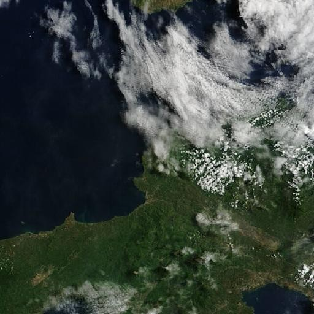
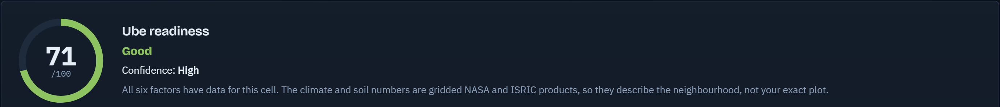
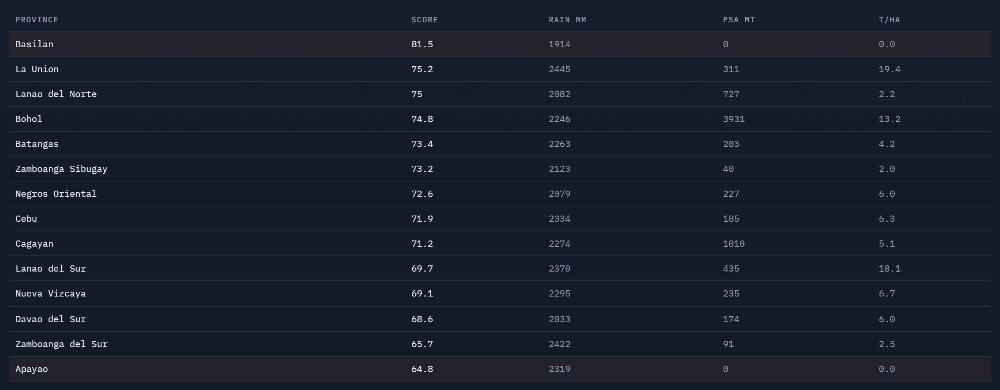
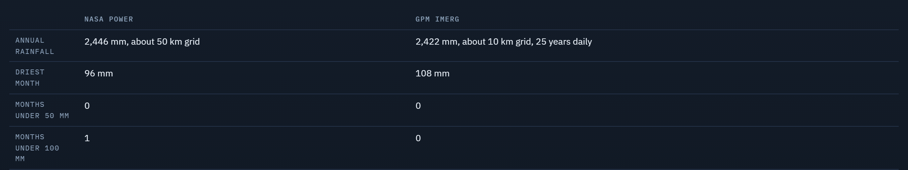

| Dataset | Used for | Resolution |
|---|---|---|
| NASA POWER MERRA-2, CERES |
Rainfall, temperature, humidity, solar radiation, root zone wetness, 2015 to 2024 | ~50 km |
| NASA SRTM Shuttle Radar Topography |
Elevation and slope, which set the erosion risk and the drainage rating | 30 m |
| GIBS live tiles MODIS and VIIRS |
True colour and NDVI, streamed into the browser from NASA | 250 m 375 m |
| SMAP L-band radar |
Surface soil moisture on the night pass | 36 km |
| GPM IMERG daily tiles |
Rainfall, rebuilt from 9,124 daily tiles at about 10 km | 10 km |
| MODIS and VIIRS flood | Where water is standing on the surface | 250 m 375 m |
| NASA CMR | Provenance, so every layer can be traced to its collection | metadata |
| Rainfall pattern and dry maturation window | GPM IMERG |
| Root zone soil moisture | POWER GWETROOT |
| Temperature and heat stress | POWER T2M_MAX |
| Slope and erosion risk | SRTM |
| Soil pH | SoilGrids |
| Soil texture and drainage | SoilGrids |

